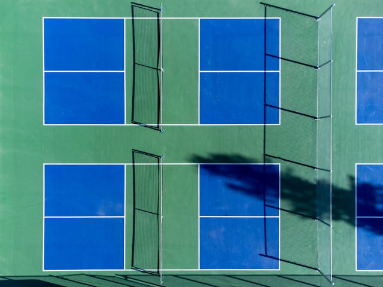

How to get started

Gear Required
1. Paddles: Pickleball paddles are not as big as tennis racquets but larger than ping-pong paddles. They’re made from different materials like wood, composite, and graphite which give different power and control.
2. Balls: Pickleballs are hollow plastic spheres, kinda like wiffle balls. They come in two types: indoor balls are softer and have bigger holes; outdoor balls are harder.
3. Court: The game takes place on a badminton-sized area (20' by 44') with a net measuring 36 inches at the sides and 34 inches in the middle. Proper shoes are suggested for safety while playing.
Advice for Newbies
1. Understand the Fundamentals: Start by learning the key rules and strokes, like serving underhand and the two-bounce principle.
2. Practice Often: Regular practice boosts your abilities. Try drills for specific shots such as dinks and volleys.
3. Be Patient: The game may feel tough at first. Take your time to learn; don't be upset by early mistakes.
4. Observe and Absorb: Watching skilled players gives you helpful tips on strategies and methods.
5. Enjoy Yourself: Keep in mind to have a good time and appreciate the social side of the game.
Nearby Spots to Play
In Rexburg, Idaho, there are multiple locations to play pickleball:
1. Rexburg District Office Gym: It offers 8 indoor courts with permanent lines.
2. Pickleball Courts at Rexburg Nature Park: You’ll find 4 outdoor courts equipped with permanent nets.